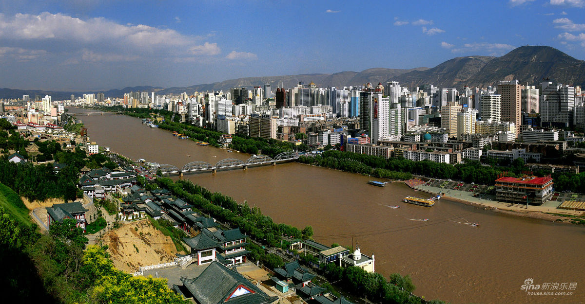

<div>
<!-- *****************************************************************************************************************
	 ABOUT ME
	 ***************************************************************************************************************** -->

	 <div class="container mtb">
	 	<div class="row">
	 		<div class="col-lg-6">
	 			
	 		</div>
	 		
	 		<div class="col-lg-6">
	 			<h4>Home, sweet home!</h4>
	 			<p>What you see on the left is a photo somehow about my hometown, Lanzhou. And to be specific, this is a photo of the "old city". Well, I googled for that picture. So I have no idea who took it, when, and for what. But whatever, that's not important for me here and now.</p>
	 			<p>Ok, Lanzhou. It's the city I spent the first 18 years of my life. It is where my mother was born. It is where my parents met, fall in love, got married, socially survived, and more or less strived. Life was hard in their youth. If life is a game, they got the extra-hard mode at that time I believe. Well when they were kids, it was hell mode. But they were not the ones responsible for feeding their families at that time, so that doesn't count. But anyway, it was hard. Harder than mine so far. So, though I am still young and stupid, I respect and admire them. They are my idols. They are the standing example of hardworking, smart, and tough. I mean if you got someone worked often unpaid-overtime, no day-off, and for decaes, you realize that's not some lazy-ass 8-5 peopel right?</p>
	 		</div>
	 	</div>
	 	<div class="row">
	 		<p>You see, the city is literally a river valley. The river is the Yellow River. Father of my civilization. I grew up known where are the mountains (north and south of the city). And where is the river. I felt safe, hugged. It's a feeling I can't feel anywhere else. For thousands years of national defense reasons and as it is part of the land commercial route between China and Europe through middle east, this city had always been an city of immigrant. People came here, people left here. It is a city of poem, a home stayed in many people's memory but only to be left. Me included. </p>
	 		<p>When I was a little kid, it was a bit like wild-west. Crime rate was high, and there were and are a lot of junkies. Street fight? That's everyday thing you see. Not among gangs, but among teenagers. For what? Anything. Not happy with each other, someone got someone else's girlfriend, you bad mouthed about my mama, a neighbor was too loud, etc., you name it. Problems was settled that way back then. Rule? Don't call cops. Because well you won't necessarily got arrested just for having a good fist fight, you will get parents from both sides involved. That's not good! Both kid will have a good beaten over when they got home if parents were involved. Knife fight? A bit different. As long as no one was seriously injured, no problem. Some little cut? No one cares. Base line is as long as there is no one got raped, or killed, cops don't give a shit. The funny thing is if both sides knew some friends, they would call them over to out-number eachother. But kids only have that big a connection. Most times, both sides will call the same guy, or kids know each other. Then you will see a huge number of young, angery kids ready to fight, but all in a sudden, some of them said "What the hell are you doing here?", "Another guy called me here for help that nuckelhead.", "Shit, the other sucker called me.", "Shit, fuck it. Let's go for a drink!", "Sure! Hey you two, fuck it. Let's have some beer." Then they go to have beer! Fight? Forget about it. After they are more or less drunk, it was settled. And the kids started all of this hated each other would be probably the best friend since then.</p>
	 		<p>Though I had never participtated in one, I like whatching it. It's definitely far funnier than any TV drama right? Well, it had been quite some years after I left there. I miss it. I love it. Though I know no matter how and what, I will not live my life in that city anymore, I no longer have that feeling that I know the social rules, I know where is the mountains and river, I know where is home. Sometimes, this kind of lost graspes me. Maybe that is the so called home-sick. I don't know. I just miss that familiarity, that feeling.</p>
	 	</div><! --/row -->
	 </div><! --/container -->
</div>
</div>
